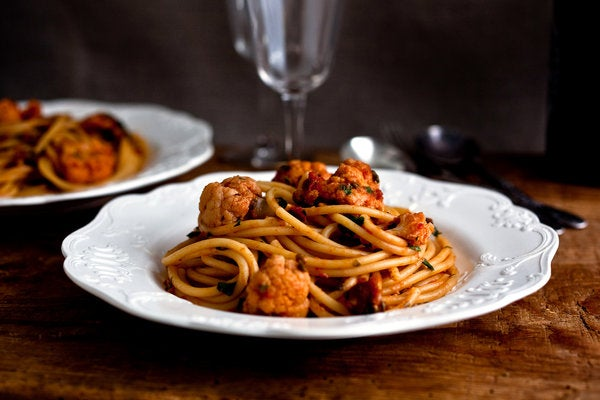

Pasta with Cauliflower, Spicy Tomato Sauce, and Capers

This simple pasta dish is surprisingly hearty, with just enough heat and plenty of depth from the capers.
Ingredients
- 1 pound frozen cauliflower florets
- 2 tablespoons extra virgin olive oil
- 2 garlic cloves, minced
- 1/4 teaspoon red chili flakes
- 14 ounces of canned crushed tomatoes
- Pinch of sugar
- 2 tablespoons capers
- 3/4 pound spaghetti
- 1/4 cup fresh parsley, chopped
- 2 ounces Parmesan, grated
- Salt
Directions
- Bring a pot of generously salted water to a boil, then add the cauliflower.
Blanch for five minutes or until tender.
Using a strainer, skimmer, or tongs, scoop the cauliflower and transfer it to a bowl of cold water.
Drain and chop the florets into small pieces.
Keep the water at a simmer.
-
Heat the oil over medium heat in a wide, heavy skillet and the garlic and chili flakes.
Cook, stirring, for 30 seconds or until the garlic is fragrant.
Stir in the tomatoes, sugar, and salt to taste.
Add the capers and cauliflower, then simmer for 10 to 15 minutes or until the tomatoes have cooked down and smell fragrant.
Taste and adjust seasonings as needed.
-
Bring the water in the pot back to a boil and add the spaghetti.
Cook until al dente, usually about 7 to 8 minutes.
Add a couple spoonfuls of pasta water to the pan with the cauliflower and stir.
Drain the pasta, then add it to the pan with the parsley and cheese.
Sir together and serve hot.